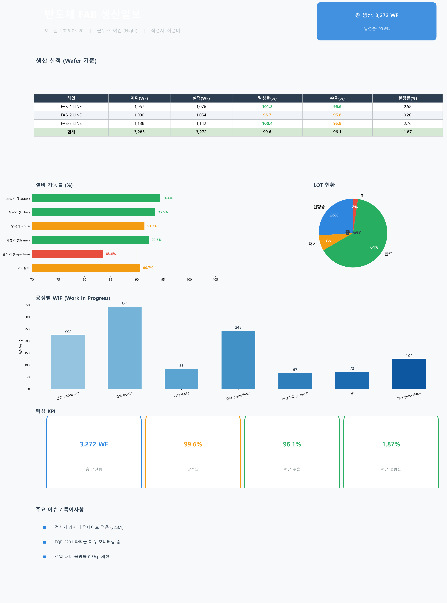
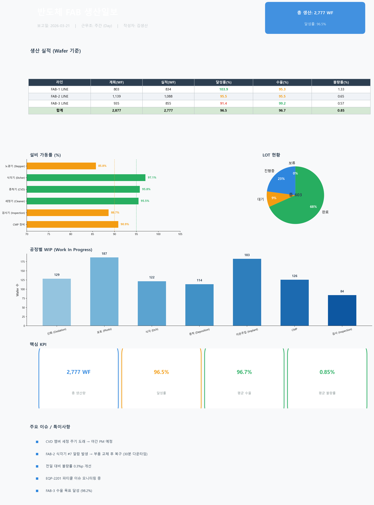

Daily Report AI Analyzer & Insight Engine
매일 발행되는 물류 수작업 일보를 AI가 자동으로 읽고, 핵심 이슈 3가지를 추출하고, 임원/실무자별 맞춤 요약을 생성하며, 대화형 Q&A로 일보에 대해 자유롭게 질문할 수 있는 AI 분석 에이전트입니다.
반도체 FAB 물류 현장에서는 매일 수작업 일보가 발행됩니다. 하지만 일보를 읽고 핵심을 파악하는 데 많은 시간이 소요되고, 사람마다 해석이 달라 정보 전달에 왜곡이 발생합니다.
기존 일보 이미지를 Gemini Vision OCR로 읽어서 구조화된 데이터로 변환. 사람이 다시 입력할 필요 없음.
단순 요약이 아닌, 전일비교/악화지표/병목구간까지 분석. 역할별 맞춤 인사이트 제공.
일보 데이터 기반 자유 질의응답. 추가 궁금증을 바로 해결. 대화 히스토리 유지.
일보 이미지 한 장을 업로드하면, 4단계 AI 파이프라인이 자동으로 핵심 인사이트를 추출합니다.
Gemini 2.0 Flash Vision이 일보 이미지를 읽어 차트/테이블/KPI 등 모든 데이터를 구조화된 JSON으로 변환합니다.
전일비교 데이터를 기반으로 핵심 이슈 3가지를 추출합니다. 긴급도별 색상 코딩으로 한눈에 파악 가능합니다.
동일 일보를 두 가지 관점으로 동시에 요약합니다. 각 역할에 필요한 정보만 선별하여 최적화된 보고를 생성합니다.
일보 데이터를 컨텍스트로 자유 질문이 가능합니다. 대화 히스토리가 유지되어 연속적인 분석이 가능합니다.
각 분석 단계에 최적화된 전문 프롬프트를 별도 파일로 관리합니다. 도메인 지식(반도체 물류)을 프롬프트에 내장하여 분석 품질을 보장합니다.
| 프롬프트 | 역할 | 핵심 지시사항 |
|---|---|---|
| ocr_extract.txt | OCR 구조화 | 이미지의 모든 데이터를 JSON으로 변환. 차트 값은 바 높이/파이 비율로 추정 |
| key_issues.txt | 핵심이슈 추출 | 정확히 3가지 이슈 추출. 수치 근거 필수. 긴급도별 색상 코딩 |
| executive.txt | 임원용 요약 | 15초 핵심 브리핑. 표 형식. 월간 달성률. 악화 지표 알림 |
| operator.txt | 실무자용 요약 | 즉시 조치 Top 3. TAT 병목. 부서-공정 지정. 최대 2줄 |
| chat_system.txt | 챗봇 시스템 | 데이터 기반 답변 only. 추측 금지. 한국어 응답. 실무적 조언 |
실제로 발행된 일보 이미지가 AI를 거쳐 어떻게 분석되는지 보여줍니다.
현장에서 매일 발행되는 물류 수작업 일보입니다. 이 이미지를 시스템에 업로드하면 AI 분석이 시작됩니다.

발행 일보 예시 (2026-03-20)

발행 일보 예시 (2026-03-21)
NiceGUI 웹앱이 Gemini AI 분석 모듈과 연결되어 동작합니다.
프로젝트 착수부터 현재까지의 개발 타임라인입니다.
PoC에서 실서비스로 전환하기 위한 단계별 계획입니다.
AI 분석 결과를 PDF로 저장하여 오프라인 공유 및 인쇄
유사 이슈 발생 시 과거 조치 결과를 RAG 기반으로 자동 추천
현장 작업자가 모바일에서 분석 결과 확인 및 질문
핵심이슈에서 바로 Jira 티켓 생성. 조치 추적 자동화
과거 데이터 기반 시계열 예측으로 내일 수작업 건수 사전 예측
여러 FAB 일보를 통합 조회하는 경영진 종합 뷰
AI 일보 분석 Agent 도입 시 예상되는 정량적/정성적 효과입니다.
30분 → 3분 이내
AI가 3가지 즉시 추출
AI가 전체 데이터 분석
임원 + 실무자 동시
실서비스 전환 시 예상되는 주요 도전 과제와 대응 방안입니다.
일보 이미지 품질(해상도, 글꼴, 레이아웃)에 따라 OCR 정확도가 달라질 수 있음. 특히 차트 수치 추정에 오차 발생 가능.
LLM 특성상 동일 데이터에 다른 분석을 생성할 수 있음. 핵심 수치 인용 정확도 관리 필요.
SSL/프록시/방화벽 환경에서 외부 Gemini API 호출 안정성.
일보 이미지에 생산량, 설비 상태 등 민감 정보 포함. 외부 API 전송 시 보안 검토 필요.
기존 방식 변경에 대한 저항. AI 분석 결과에 대한 신뢰 확보 시간.
일보당 OCR + 이슈 + 요약x2 + 챗봇 = 최소 4~5회 API 호출.
로컬 환경에서 바로 실행해볼 수 있습니다.